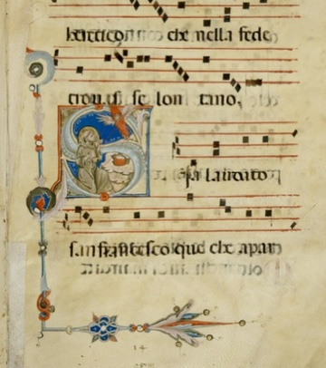
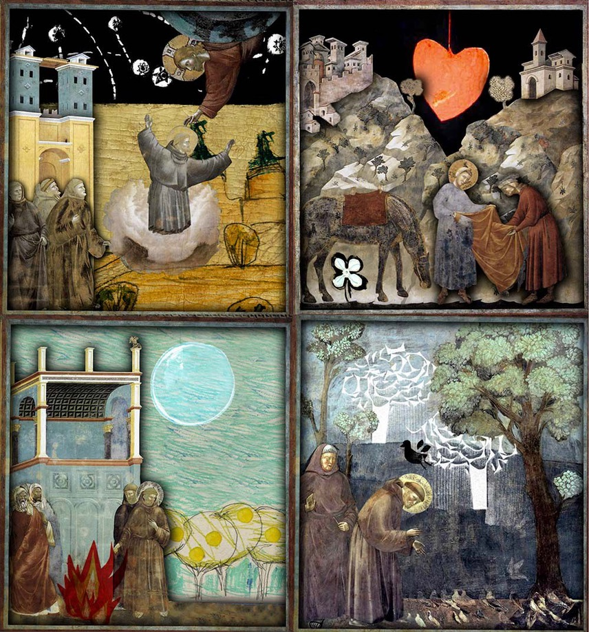

Sia laudato, San Francesco
Imagine this: a medieval troubadour, a street preacher, and a circle of devoted brothers and sisters around him — all with songs on their lips. What did the world of Francis of Assisi sound like?
In the animated concert program Sia laudato, San Francesco, vocal ensemble Anime Beatitudinis Cantando weaves a musical narrative tapestry. Ancient musical gems, vivid visuals, and a joyful spirit form the warp and weft of this rich fabric. This program, celebrating the 800th anniversary of the Cantico del Sole, was developed in collaboration with animator Cristina Garcia Martin.
A Jubilant Jubilee
The year 2025 has been declared a Jubilee Year by the late Pope Francis, with a special focus on the Christian pilgrimage to Rome. But there’s more: it also marks 800 years since Saint Francis of Assisi (Assisi, 1181/1182 – October 3, 1226) — patron saint of Italy, animals, and the environmental movement — composed his famous Canticle of the Sun. And in 2026, we commemorate 800 years since Francis’s passing.
In his Canticle, Francis addresses various elements of Creation as brothers and sisters. He invokes the sun, moon, and stars, followed by the four classical elements as they were understood in medieval times: air, water, fire, and earth. To these, Francis adds love and peace. Toward the end of his life, he even found room to include sickness, physical death, and eternal life in his poetic vision of Creation. Was he ultimately able to value even these in their service to the Most High?
A Tapestry of Interwoven Musical Styles
The image beside this text shows the Canticle in a 13th-century manuscript. From the layout, it’s clear that musical notation is missing — suggesting the Canticle was already both prayed and sung. Music held an important role in Franciscan spirituality. Thomas of Celano describes Francis singing of God the way a troubadour might sing of courtly love. He was known to burst into spontaneous song, and the Franciscan brothers often used music and chant in their devotions and street preaching.
Many of these devotional songs borrowed melodies from popular music of the time. Some of these tunes were later taken up by devotional confraternities in cities like Florence and Cortona, eventually written down in laudari (books of laude). Later still, polyphonic versions of some laude emerged, preserved in beautifully illuminated manuscripts of the Trecento era, such as the Squarcialupi Codex. These polyphonic settings in turn inspired new secular texts. Thus, a rich tapestry of interconnected styles and songs emerged — from Gregorian chant and troubadour melodies to the early polyphony of renowned Trecento composers like Francesco (!) Landini and Johannes Ciconia.
An Ode to Francis and His Canticle of the Sun
From this broad, interconnected repertoire, the singers of Anime Beatitudinis Cantando selected songs about Francis and themes closely related to his life and legacy, to the Franciscans, and to the Canticle of the Sun. They also perform a melody — set to the Umbrian text of the Canticle — in a musical style reminiscent of Francis’s own era.
Collaboration with Animator Cristina Garcia Martin
For this project, ensemble ABC teams up for the first time with animator Cristina Garcia Martin. Inspired by Giotto’s frescoes in the Basilica of Saint Francis in Assisi, she creates stunning modern animations that accompany the Canticle and key moments from the life of Francis, forming the visual narrative thread of the concert.
Sia laudato, San Francesco — at a Glance
Animated concert program by vocal ensemble Anime Beatitudinis Cantando, optionally joined by additional singers or instrumentalists.
Medieval songs for (and by) Saint Francis, including the celebrated Canticle of the Sun, marking their jubilees in 2025–2026.
Booking available through December 2026.
A multisensory experience enhanced by Cristina Garcia Martin’s unique animations.
Duration: 35 minutes (e.g., for festivals or double concerts) to a maximum of 70 minutes.
Cost estimate: contact Marsja for details. Marsja
Additional activities (e.g., workshops or lectures) available by arrangement.
Performance Dates
June 29, 2025 – Franciscan Monastery Church in Megen; Double concert with Herz Ensemble; Start time: 15:00 (doors open at 14:30)
Additional dates to be announced.